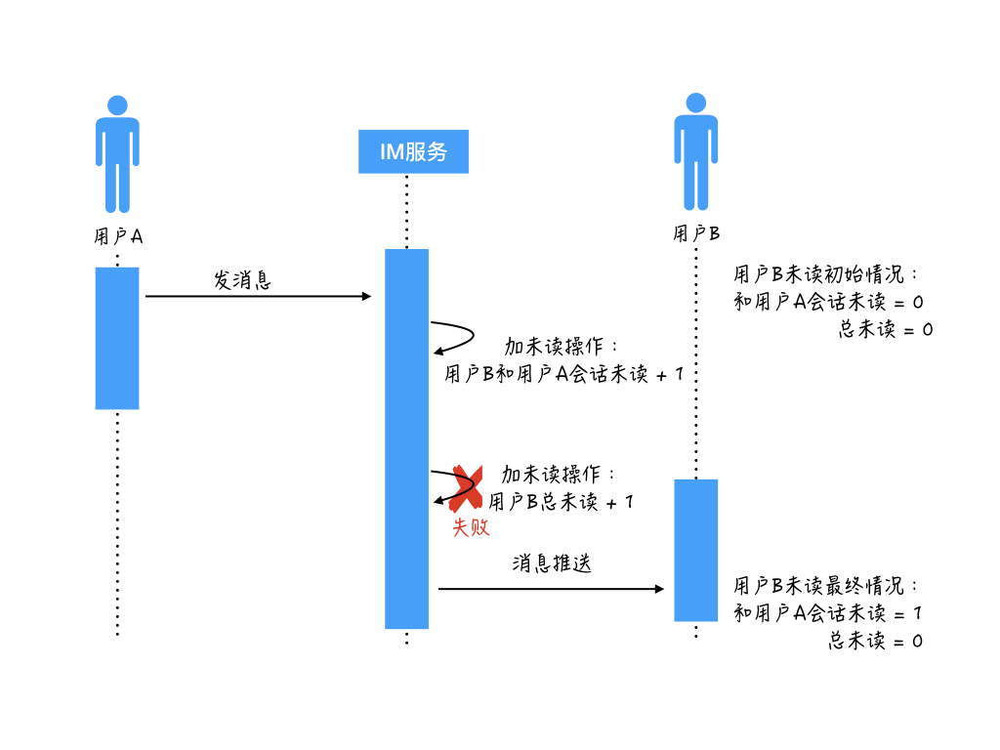
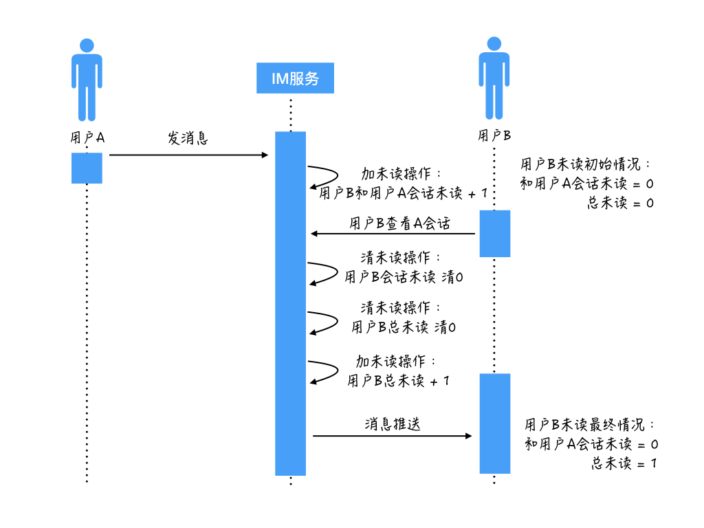

- 00 开篇词 搞懂“实时交互”的IM技术，将会有什么新机遇？.md.html
- 01 架构与特性：一个完整的IM系统是怎样的？.md.html
- 02 消息收发架构：为你的App，加上实时通信功能.md.html
- 03 轮询与长连接：如何解决消息的实时到达问题？.md.html
- 04 ACK机制：如何保证消息的可靠投递？.md.html
- 05 消息序号生成器：如何保证你的消息不会乱序？.md.html
- 06 HttpDNS和TLS：你的消息聊天真的安全吗？.md.html
- 07 分布式锁和原子性：你看到的未读消息提醒是真的吗？.md.html
- 08 智能心跳机制：解决网络的不确定性.md.html
- 09 分布式一致性：让你的消息支持多终端漫游.md.html
- 10 自动智能扩缩容：直播互动场景中峰值流量的应对.md.html
- 11 期中实战：动手写一个简易版的IM系统.md.html
- 12 服务高可用：保证核心链路稳定性的流控和熔断机制.md.html
- 13 HTTP Tunnel：复杂网络下消息通道高可用设计的思考.md.html
- 14 分片上传：如何让你的图片、音视频消息发送得更快？.md.html
- 15 CDN加速：如何让你的图片、视频、语音消息浏览播放不卡？.md.html
- 16 APNs：聊一聊第三方系统级消息通道的事.md.html
- 17 Cache：多级缓存架构在消息系统中的应用.md.html
- 18 Docker容器化：说一说IM系统中模块水平扩展的实现.md.html
- 19 端到端Trace：消息收发链路的监控体系搭建.md.html
- 20 存储和并发：万人群聊系统设计中的几个难点.md.html
- 21 期末实战：为你的简约版IM系统，加上功能.md.html
- 22 答疑解惑：不同即时消息场景下架构实现上的异同.md.html
- 结束语 真正的高贵，不是优于别人，而是优于过去的自己.md.html
- 捐赠
07 分布式锁和原子性：你看到的未读消息提醒是真的吗？
你好，我是袁武林。
在前面几节课程中，我着重把即时消息场景中几个核心的特性，进行了较为详细的讲解。在实际用户场景下，除了实时性、可靠性、一致性、安全性这些刚需外，还有很多功能对用户体验的影响也是很大的，比如今天我要讲的“消息未读数”。
消息未读数对用户使用体验影响很大，这是因为“未读数”是一种强提醒方式，它通过App角标，或者App内部Tab的数字标签，来告诉用户收到了新的消息。
对于在多个社交App来回切换的重度用户来说，基本上都是靠“未读数”来获取新消息事件，如果“未读数”不准确，会对用户造成不必要的困扰。
比如，我们看到某个App有一条“未读消息提醒”，点进去事件却没有，这种情况对于“强迫症患者”实在属于不可接受；或者本来有了新的消息，但未读数错误，导致没有提醒到用户，这种情况可能会导致用户错过一些重要的消息，严重降低用户的使用体验。所以，从这里我们可以看出“消息未读数”在整个消息触达用户路径中的重要地位。
消息和未读不一致的原因
那么在即时消息场景中，究竟会有哪些情况导致消息和未读数出现“不一致”的情况呢？要搞清楚这个问题，我们要先了解两个涉及未读数的概念：“总未读”与“会话未读”。我们分别来看看以下两个概念。
会话未读：当前用户和某一个聊天方的未读消息数。比如用户A收到了用户B的2条消息，这时，对于用户A来说，他和用户B的会话未读就是“2”，当用户A打开和用户B的聊天对话页查看这两条消息时，对于用户A来说，他和用户B的会话未读就变成0了。对于群聊或者直播间来说也是一样的逻辑，会话未读的对端只不过是一个群或者一个房间。
总未读：当前用户的所有未读消息数，这个不难理解，总未读其实就是所有会话未读的和。比如用户A除了收到用户B的2条消息，还收到了用户C的3条消息。那么，对于用户A来说，总未读就是“5”。如果用户查看了用户B发给他的2条消息，这时用户A的总未读就变成了“3”。
从上面的概念我们知道，实际上总未读数就是所有会话未读数的总和，那么，在实现上是不是只需要给每个用户维护一套会话未读就可以了呢？
会话未读和总未读单独维护
理论上是可以的。但在很多即时消息的“未读数”实现中，会话未读数和总未读数一般都是单独维护的。
原因在于“总未读”在很多业务场景里会被高频使用，比如每次消息推送需要把总未读带上用于角标未读展示。
另外，有些App内会通过定时轮询的方式来同步客户端和服务端的总未读数，比如微博的消息栏总未读不仅包括即时消息相关的消息数，还包括其他一些业务通知的未读数，所以通过消息推送到达后的累加来计算总未读，并不是很准确，而是换了另外一种方式，通过轮询来同步总未读。
对于高频使用的“总未读”，如果每次都通过聚合所有会话未读来获取，用户的互动会话不多的话，性能还可以保证；一旦会话数比较多，由于需要多次从存储获取，容易出现某些会话未读由于超时等原因没取到，导致总未读数计算少了。
而且，多次获取累加的操作在性能上比较容易出现瓶颈。所以，出于以上考虑，总未读数和会话未读数一般是单独维护的。
未读数的一致性问题
单独维护总未读和会话未读能解决总未读被“高频”访问的性能问题，但同时也会带来新的问题：未读数的一致性。
未读数一致性是指：维护的总未读数和会话未读数的总和要保持一致。如果两个未读数不能保持一致，就会出现“收到新消息，但角标和App里的消息栏没有未读提醒”，或者“有未读提醒，点进去找不到是哪个会话有新消息”的情况。
这两种异常情况都是我们不愿意看到的。那么这些异常情况究竟是怎么出现的呢？
我们来看看案例，我们先来看看第一个：

用户A给用户B发送消息，用户B的初始未读状态是：和用户A的会话未读是0，总未读也是0。
消息到达IM服务后，执行加未读操作：先把用户B和用户A的会话未读加1，再把用户B的总未读加1。
假设加未读操作第一步成功了，第二步失败。最后IM服务把消息推送给用户B。这个时候用户B的未读状态是：和用户A的会话未读是1，总未读是0。
这样，由于加未读第二步执行失败导致的后果是：用户B不知道收到了一条新消息的情况，从而可能漏掉查看这条消息。
那么案例是由于在加未读的第二步“加总未读”的时候出现异常，导致未读和消息不一致的情况。
那么，是不是只要加未读操作都正常执行就没有问题了呢？接下来，我们再看下第二个案例。

用户A给用户B发送消息，用户B的初始未读状态是：和用户A的会话未读是0，总未读也是0。
消息到达IM服务后，执行加未读操作：先执行加未读的第一步，把用户B和用户A的会话未读加1。
这时执行加未读操作的服务器由于某些原因变慢了，恰好这时用户B在App上点击查看和用户A的聊天会话，从而触发了清未读操作。
执行清未读第一步，把用户B和用户A的会话未读清0，然后继续执行清未读第二步，把用户B的总未读也清0。
清未读的操作都执行完之后，执行加未读操作的服务器才继续恢复执行加未读的第二步，把用户B的总未读加1，那么这个时候就出现了两个未读不一致的情况。
导致的后果是：用户B退出会话后，看到有一条未读消息，但是点进去却找不到是哪个聊天会话有未读消息。
这里，我来分析一下这两种不一致的案例原因：其实都是因为两个未读的变更不是原子性的，会出现某一个成功另一个失败的情况，也会出现由于并发更新导致操作被覆盖的情况。所以要解决这些问题，需要保证两个未读更新操作的原子性。
保证未读更新的原子性
那么，在分布式场景下，如何保证两个未读的“原子更新”呢？一个比较常见的方案是使用一个分布式锁来解决，每次修改前先加锁，都变更完后再解开。
分布式锁
分布式锁的实现有很多，比如，依赖DB的唯一性、约束来通过某一条固定记录的插入成功与否，来判断锁的获取。也可以通过一些分布式缓存来实现，比如MC的add、比如Redis的setNX等。具体实现机制，我这里就不细讲了，在我们的实战课程中，我们会有相应的代码体现。
不过，要注意的是，分布式锁也存在它自己的问题。由于需要增加一套新的资源访问逻辑，锁的引入会降低吞吐；同时对锁的管理和异常的处理容易出现Bug，比如需要资源的单点问题、需要考虑宕机情况下如何保证锁最终能释放。
支持事务功能的资源
除了分布式锁外，还可以通过一些支持事务功能的资源，来保证两个未读的更新原子性。
事务提供了一种“将多个命令打包，然后一次性按顺序地执行”的机制，并且事务在执行的期间不会主动中断，服务器在执行完事务中的所有命令之后，才会继续处理其他客户端的其他命令。
比如：Redis通过 MULTI、DISCARD 、EXEC和WATCH四个命令来支持事务操作。
比如每次变更未读前先watch要修改的key，然后事务执行变更会话未读和变更总未读的操作，如果在最终执行事务时被watch的两个未读的key的值已经被修改过，那么本次事务会失败，业务层还可以继续重试直到事务变更成功。
依托Redis这种支持事务功能的资源，如果未读数本身就存在这个资源里，是能比较简单地做到两个未读数“原子变更”的。
但这个方案在性能上还是存在一定的问题，由于watch操作实际是一个乐观锁策略，对于未读变更较频繁的场景下（比如一个很火的群里大家发言很频繁），可能需要多次重试才可以最终执行成功，这种情况下执行效率低，性能上也会比较差。
原子化嵌入脚本
那么有没有性能不错还能支持“原子变更”的方案呢？
其实在很多资源的特性中，都支持“原子化的嵌入脚本”来满足业务上对多条记录变更高一致性的需求。Redis就支持通过嵌入Lua脚本来原子化执行多条语句，利用这个特性，我们就可以在Lua脚本中实现总未读和会话未读的原子化变更，而且还能实现一些比较复杂的未读变更逻辑。
比如，有的未读数我们不希望一直存在而干扰到用户，如果用户7天没有查看清除未读，这个未读可以过期失效，这种业务逻辑就比较方便地使用Lua脚本来实现“读时判断过期并清除”。
原子化嵌入脚本不仅可以在实现复杂业务逻辑的基础上，来提供原子化的保障，相对于前面分布式锁和watch事务的方案，在执行性能上也更胜一筹。
不过这里要注意的是，由于Redis本身是服务端单线程模型，Lua脚本中尽量不要有远程访问和其他耗时的操作，以免长时间悬挂（Hang）住，导致整个资源不可用。
小结
本节课我们先了解了未读数在即时消息场景中的重要性，然后分析了造成未读数和消息不一致的原因，原因主要在于：“总未读数”和“会话未读数”在大部分业务场景中需要能够独立维护，但两个未读数的变更存在成功率不一致和并发场景下互相覆盖的情况。
接下来我们探讨了几种保证未读数原子化变更的方案，以及深入分析了每种方案各自的优劣，三种方案分别为：
- 分布式锁，具备较好普适性，但执行效率较差，锁的管理也比较复杂，适用于较小规模的即时消息场景；
- 支持事务功能的资源，不需要额外的维护锁的资源，实现较为简单，但基于乐观锁的watch机制在较高并发场景下失败率较高，执行效率比较容易出现瓶颈；
- 原子化嵌入脚本，不需要额外的维护锁的资源，高并发场景下性能也较好，嵌入脚本的开发需要一些额外的学习成本。
这一篇我们讲到的内容，简单来看只是消息未读数不一致的场景，但是，如果我们站在宏观视角下，不难看出在分布式场景下，这其实是一个并发更新的问题。
不管是分布式锁、还是支持事务功能的资源，以及我们最后讲到的原子化的嵌入脚本，其实不仅仅可以用来解决未读数的问题，对于通用的分布式场景下涉及的需要保证多个操作的原子性或者事务性的时候，这些都是可以作为可选方案来考虑的。
最后给你留一个思考题：类似Redis+Lua的原子化嵌入脚本的方式，是否真的能够做到“万无一失”的变更一致性？比如，执行过程中机器掉电会出现问题吗？
你可以给我留言，我们一起讨论，感谢你的收听，我们下次再见。
© 2019 - 2023 Liangliang Lee. Powered by gin and hexo-theme-book.